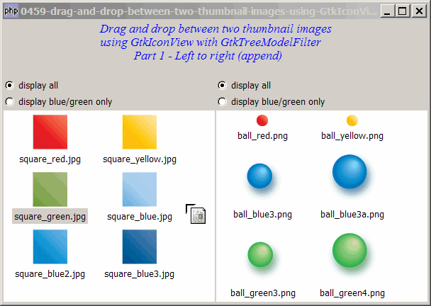

Problem
This is in response to Wim Stockman's post titled "Drag Drop between 2 filtered GtkIconViews".
This solution is similar to that of How to drag and drop between two thumbnail images using GtkIconView - Part 1 - left to right append?
The only difference is that this one uses GtkTreeModelFilter on top of a GtkListStore. This allows filtering of selected thumbnail images in the GtkIconView as shown below.
In this Part 1, I'll show how to drag and drop images from left to right only. Also, in this example, the dropped images will be appended to the end of the dropped view. In Part 2, I'll show you how to insert image at the dropped location.

Solution
- We first set up wo filtered lists of thumbnail images using GtkIconView with GtkTreeModelFilter using the method as outlined in How to setup two filtered lists of thumbnail images using GtkIconView with GtkTreeModelFilter?
- We then make use of the same technique for drag and drop as described in the article How to drag and drop between two thumbnail images using GtkIconView - Part 1 - left to right append?
Sample Code
The following image files are required by the sample code below. Please save a copy of the image files and put them in the same directory where you store the sample code.
 | square_red.jpg |
| square_yellow.jpg | |
| square_green.jpg | |
| square_blue.jpg | |
| square_blue2.jpg | |
| square_blue3.jpg | |
| ball_red.png | |
| ball_yellow.png | |
| ball_blue3.png | |
| ball_blue3a.png | |
| ball_green3.png | |
| ball_green4.png |
| 1 2 3 4 5 6 7 8 9 10 11 12 13 14 15 16 17 20 21 22 25 26 27 30 31 32 33 34 35 36 37 38 39 40 41 42 43 44 45 46 47 50 53 54 55 56 57 58 59 60 61 62 63 64 65 66 67 68 69 70 71 72 73 74 75 76 78 79 80 81 82 83 84 85 86 87 88 89 90 91 92 93 94 95 97 98 99 100 101 102 103 104 105 112 115 116 117 119 120 121 122 123 125 126 128 129 130 132 133 135 136 137 138 140 141 143 145 146 147 149 152 153 154 156 157 158 159 160 161 162 163 164 165 166 167 168 169 170 171 172 173 174 175 176 177 178 179 180 | <?php $window = new GtkWindow(); $window->set_size_request(600, 400); $window->connect_simple('destroy', array('Gtk','main_quit')); $window->add($vbox = new GtkVBox()); // display title $title = new GtkLabel("Drag and drop between two thumbnail images\n". "using GtkIconView with GtkTreeModelFilter\n". " Part 1 - Left to right (append)"); $title->modify_font(new PangoFontDescription("Times New Roman Italic 10")); $title->modify_fg(Gtk::STATE_NORMAL, GdkColor::parse("#0000ff")); $title->set_size_request(-1, 60); $vbox->pack_start($title, 0, 0); $vbox->pack_start(new GtkLabel(), 0, 0); // add a small gap // Set up a scroll window $hpane = new GtkHPaned(); $vbox->pack_start($hpane); $imagelist[0] = array('square_red.jpg', 'square_yellow.jpg', 'square_green.jpg', 'square_blue.jpg', 'square_blue2.jpg', 'square_blue3.jpg'); $imagelist[1] = array('ball_red.png', 'ball_yellow.png', 'ball_blue3.png', 'ball_blue3a.png', 'ball_green3.png', 'ball_green4.png',); $left_vbox = setup_iconview(0, 'left'); $right_vbox = setup_iconview(1, 'right'); $view[0]->drag_source_set(Gdk::BUTTON1_MASK, array( array( 'text/plain', 0, 0)), Gdk::ACTION_COPY|Gdk::ACTION_MOVE); $view[0]->connect('drag-data-get', 'on_drag'); $view[1]->drag_dest_set(Gtk::DEST_DEFAULT_ALL, array( array( 'text/plain', 0, 0)), Gdk::ACTION_COPY|Gdk::ACTION_MOVE); $view[1]->connect('drag-data-received', 'on_drop'); $hpane->add1($left_vbox); $hpane->add2($right_vbox); $view[0]->set_size_request(300, -1); $window->show_all(); Gtk::main(); function setup_iconview($id, $label) { global $imagelist, $model, $modelfilter, $view; if (defined("GObject::TYPE_STRING")) { $model[$id] = new GtkListStore(GdkPixbuf::gtype, GObject::TYPE_STRING, GObject::TYPE_BOOLEAN); } else { $model[$id] = new GtkListStore(GdkPixbuf::gtype, Gtk::TYPE_STRING, Gtk::TYPE_BOOLEAN); } $modelfilter[$id] = new GtkTreeModelFilter($model[$id]); $modelfilter[$id]->set_visible_column(2); foreach($imagelist[$id] as $img) { $pixbuf = GdkPixbuf::new_from_file($img); $flag = (preg_match('/blue/', $img) || preg_match('/green/', $img)) ? 1 : 0; $model[$id]->append(array($pixbuf, $img, $flag)); } $view[$id] = new GtkIconView($model[$id]); $view[$id]->set_pixbuf_column(0); // col 0 of the model $view[$id]->set_text_column(1); // col 1 of the model $view[$id]->set_selection_mode(Gtk::SELECTION_MULTIPLE); $view[$id]->set_columns(0); $view[$id]->set_item_width(120); $vbox = new GtkVBox(); $radio1 = setup_radio(null, 'display all', $label.'_all', $id); $radio2 = setup_radio($radio1, 'display blue/green only', $label.'_filter1', $id); $vbox->pack_start($radio1, 0); $vbox->pack_start($radio2, 0); $vbox->pack_start($view[$id]); return $vbox; } // process drag function on_drag($widget, $context, $data, $info, $time) { $selection = $widget->get_selected_items(); if (count($selection)==0) return; // return if there's no selection $data->set_text(serialize($selection)); } // process drop function on_drop($widget, $context, $x, $y, $data, $info, $time) { // append the dragged item to the destination view $path_array = $widget->get_path_at_pos($x, $y); // note 3 global $imagelist; global $model, $modelfilter, $view; $data = unserialize($data->data); $dest_model = $widget->get_model(); $source_model = $view[0]->get_model(); foreach($data as $img) { $i = $img[0]; if (method_exists($source_model, 'append')) { $iter = $model[0]->get_iter($i); // note 1 } else { $iter_filter = $modelfilter[0]->get_iter($i); $iter = $modelfilter[0]->convert_iter_to_child_iter($iter_filter); // note 2 } $img_name = $model[0]->get_value($iter, 1); $model[0]->remove($iter); $pixbuf = GdkPixbuf::new_from_file($img_name); $flag = (preg_match('/blue/', $img_name) || preg_match('/green/', $img_name)) ? 1 : 0; if (method_exists($dest_model, 'append')) { $dest_model->append(array($pixbuf, $img_name, $flag)); } else { $model[1]->append(array($pixbuf, $img_name, $flag)); $view[1]->set_model($model[1]); $view[1]->set_model($modelfilter[1]); if (Gtk::check_version(2, 10, 0) == null) { $view[1]->emit_stop_by_name('drag_data_received'); // note 3 } } } } // function to simplify the display of grouped radio buttons function setup_radio($radio_button_grp, $button_label, $button_value, $id) { $radio = new GtkRadioButton($radio_button_grp, $button_label); $radio->connect('toggled', "on_toggle", $button_value, $id); return $radio; } // call-back function when user pressed a radio button function on_toggle($radio, $value, $id) { global $view, $model, $modelfilter; $label = $radio->child->get_label(); $active = $radio->get_active(); if ($active) { echo "radio button pressed: $label (value = $value)\n"; if (preg_match('/filter1/', $value)) { $view[$id]->set_model($modelfilter[$id]); } else { $view[$id]->set_model($model[$id]); } } } ?> |
Output
As shown above.
Explanation
This example make use of the techniques from the following two articles:
- How to drag and drop between two thumbnail images using GtkIconView - Part 1 - left to right append?
- How to setup two filtered lists of thumbnail images using GtkIconView with GtkTreeModelFilter?
What's new here:
- For iconview without filter, you can just get the iter with
get_iter(). - For iconview with filter, Get the iter of the underlying base model.
- For gtk+ v2.10 and above, you need to use emit_stop_by_name('drag_data_received') to gobble up the 'drag_data_received' signal for an iconview with filter. Try commenting this line. You will get the following error message:
Gtk-WARNING **: You must override the default 'drag_data_received' handler on GtkIconView when using models that don't support the GtkTreeDragDest interface and enabling drag-and-drop. The simplest way to do this is to connect to 'drag_data_received' and call g_signal_stop_emission_by_name() in your signal handler to prevent the default handler from running. Look at the source code for the default handler in gtkiconview.c to get an idea what your handler should do. (gtkiconview.c is in the GTK+ source code.) If you're using GTK+ from a language other than C, there may be a more natural way to override default handlers, e.g. via derivation.
What a long error message!
Related Links
- How to drag and drop between two thumbnail images using GtkIconView - Part 1 - left to right append?
- How to setup two filtered lists of thumbnail images using GtkIconView with GtkTreeModelFilter?
- How to drag and drop between two thumbnail images using GtkIconView with GtkTreeModelFilter - Part 2 - left to right insert?
- How to drag and drop between two thumbnail images using GtkIconView - Part 2 - left to right insert?
- How to drag and drop between two thumbnail images using GtkIconView - Part 3 - both directions with insert?
- How to drag and drop between two thumbnail images using GtkIconView - Part 4 - prevent drag and drop to same view?
- How to display a list of thumbnail images using GtkIconView?
- How to select thumbnail images with drag and drop using GtkIconView - Part 1 - left to right?
- How to select thumbnail images with drag and drop using GtkIconView - Part 2 - in both directions?
- How to drag and drop between 2 GtkTreeViews - Part 1 - left to right?
- How to drag and drop between 2 GtkTreeViews - Part 2 - in both directions?
Read more...